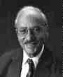

George Dantzig studied mathematics at the University of Maryland, receiving his A.B. in 1936. The following year he received an M.A. in mathematics from the University of Michigan.
Dantzig worked as a Junior Statistician in the U.S. Bureau of Labor Statistics from 1937 to 1939, then, from 1941 to 1946, he was head of the Combat Analysis Branch, U.S.A.F. Headquarters Statistical Control. He received his doctorate in mathematics from the University of California, Berkeley in 1946. In that year he was appointed Mathematical Advisor for USAF Headquarters.
In 1947 Dantzig made the contribution to mathematics for which he is most famous, the simplex method of optimisation. It grew out of his work with the U.S. Air Force where he become an expert on planning methods solved with desk calculators. In fact this was known as "programming", a military term that, at that time, referred to plans or schedules for training, logistical supply or deployment of men.
Dantzig mechanised the planning process by introducing "linear programming", where "programming" has the military meaning explained above. The importance of linear programming methods was described, in 1980, by Laszlo Lovasz who wrote:-
If one would take statistics about which mathematical problem is using up most of the computer time in the world, then ... the answer would probably be linear programming.Also in 1980 Eugene Lawler wrote:-
[Linear programming] is used to allocate resources, plan production, schedule workers, plan investment portfolios and formulate marketing (and military) strategies. The versatility and economic impact of linear programming in today's industrial world is truly awesome.Dantzig however modestly wrote:-
The tremendous power of the simplex method is a constant surprise to me.Dantzig became a research mathematician with the RAND Corporation in 1952, then in 1960 he was appointed professor at Berkeley and Chairman of the Operations Research Center. While there he wrote Linear programming and extensions (1963). In 1966 he was appointed Professor of Operations Research and Computer Science at Stanford University.
His work in a wide range of topics related to optimisation and operations research over the years has been of major importance. However, writing in 1991, Dantzig noted that:-
... it is interesting to note that the original problem that started my research is still outstanding - namely the problem of planning or scheduling dynamically over time, particularly planning dynamically under uncertainty. If such a problem could be successfully solved it could eventually through better planning contribute to the well-being and stability of the world.Dantzig has received many honours including the Von Neumann Theory Prize in Operational Research in 1975. His work is summarised by Stanford University as follows:-
A member of the National Academy of Engineering, the National Academy of Science, the American Academy of Arts and Sciences and recipient of the National Medal of Science, plus eight honorary degrees, Professor Dantzig's seminal work has laid the foundation for much of the field of systems engineering and is widely used in network design and component design in computer, mechanical, and electrical engineering.